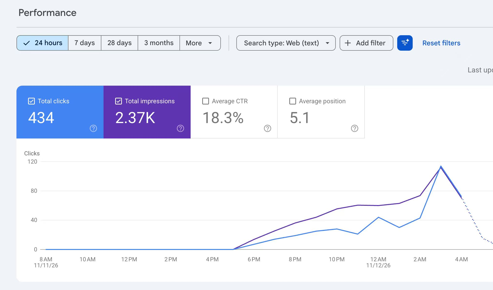
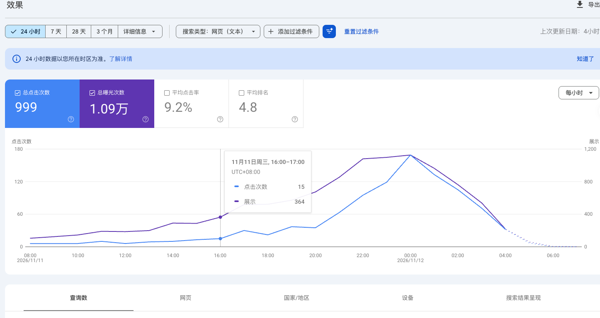

2026 年 11 月 12 日的群聊里有两段新站分享。中午 Sean Hoo 贴出刚接入支付就收到的第一笔付款；晚上 Steven 分享了自己昨天上线的站，几个小时内拿到几千曝光、几百点击，并给出了从找词到优化的完整流程。
刚接入支付就收到第一笔付款
Sean Hoo 在 12:56 说「刚接入支付就收到一笔付款」。截图里是一笔 3.99 美元的付款，状态显示「成功」，时间 11 月 12 日下午 12:53。
他补充这个站 10 号上线、11 号被谷歌收录，评价四个字：新词的力量。
晚上分享：几小时拿到几 K 曝光
Steven 的站是 11 日刚上线的。Search Console 24 小时数据：总点击 434，总曝光 2.37K，平均点击率 18.3%，平均排名 5.1；曲线在 11 月 11 日傍晚开始抬升。

从找词到上线的完整流程
- 在哥飞老师的新词服务里找词，看哪些是可以做的。
- 去 Google Trends 看词现在的热度，热度可以才继续。
- 把词发给 SEO Agent，判断是否可以建站。
- 可以建站就让 SEO Agent 选域名；域名选好，给出一个建站方案，开始建站。
- 建完站把域名发给 SEO Agent，让它分析站哪里还可以优化。
- 把优化建议发给 Codex 执行，反复迭代，直到 SEO Agent 说保持不变，就把站放着看效果。
另一个站：24 小时 999 点击
Steven 还有一个 10 号上线、同样从哥飞新词库里挖词的站：24 小时 999 次点击、1.09 万次曝光，平均点击率 9.2%，平均排名 4.8。

变现方式
有人问这个站是做付费还是接广告，回答是：工具站，做订阅。
原始对话
两个导出包按时间顺序拼接：中午一段 4 条（Sean Hoo），晚上一段 7 条，共 11 条消息，其中 3 条是截图。导出包把每段内的消息统一标记为同一发言人，以下按导出原样保留。
聊天记录（11 条）
参与者 2 人：·Sean Hoo、·Steven · 时间范围 2026年11月12日 12:56 至 2026年11月12日 23:50 · 原始 11 条，保留 11 条